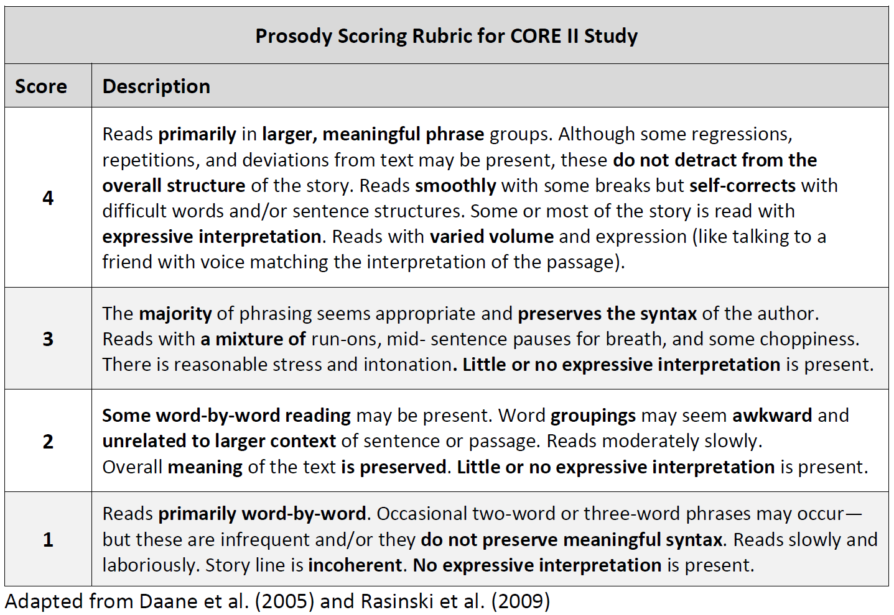
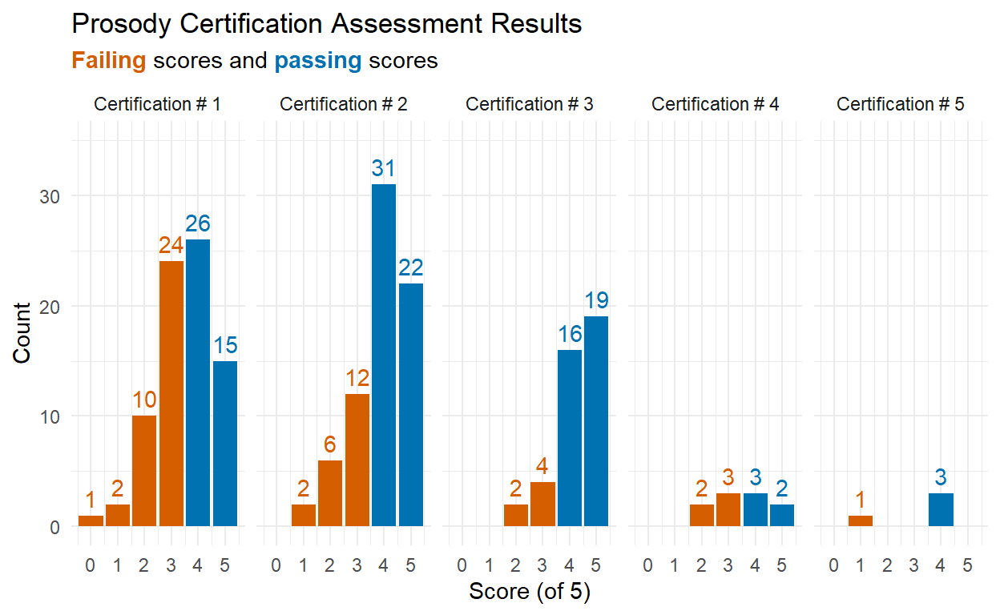
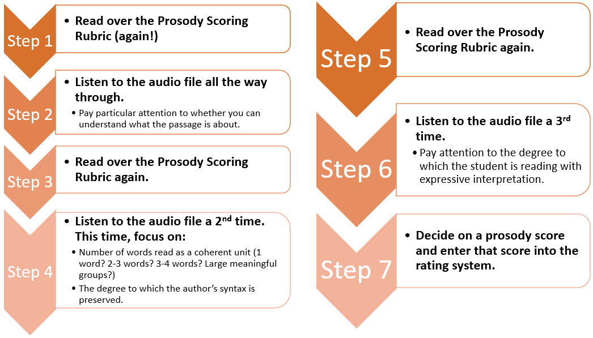
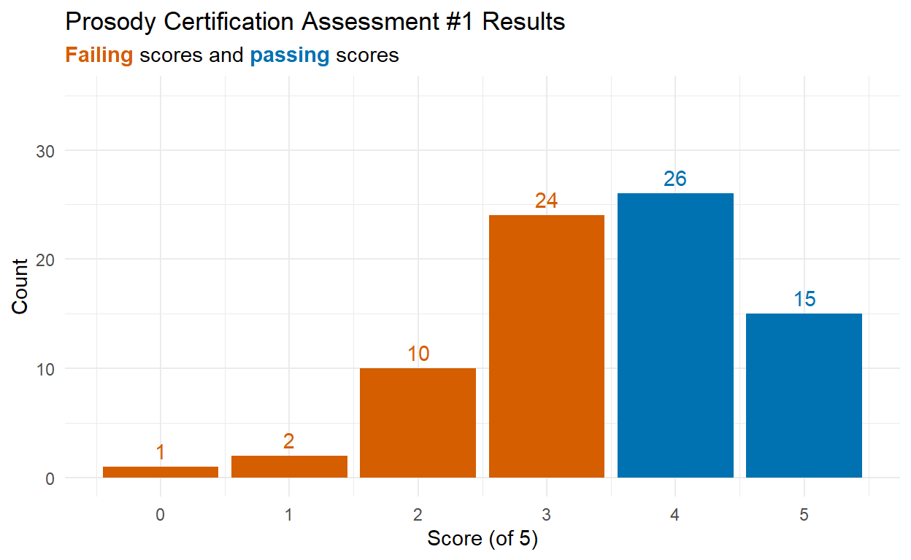
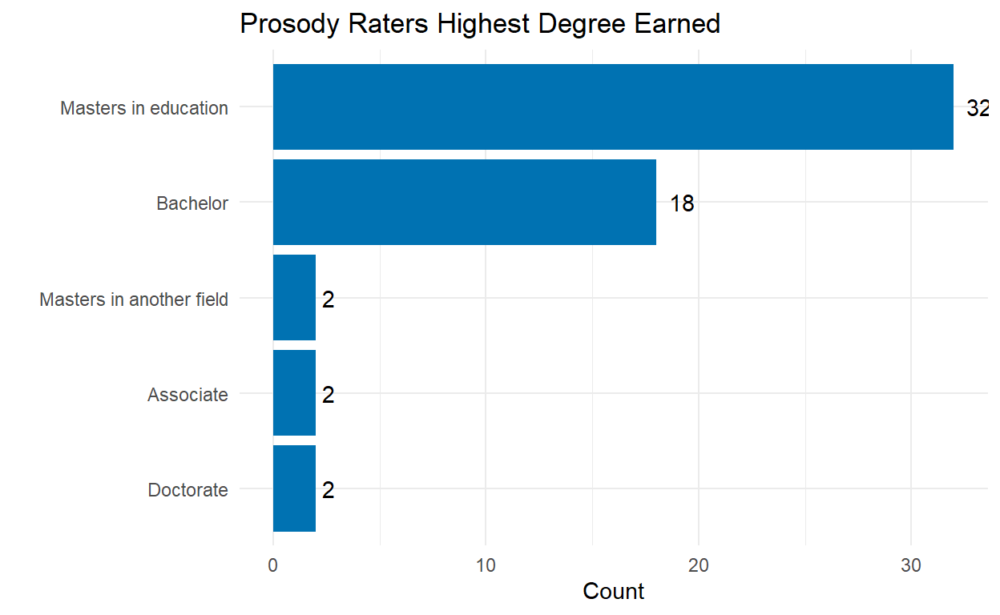
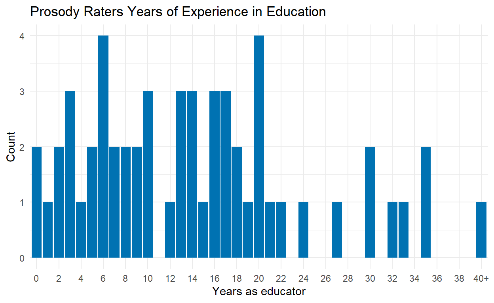
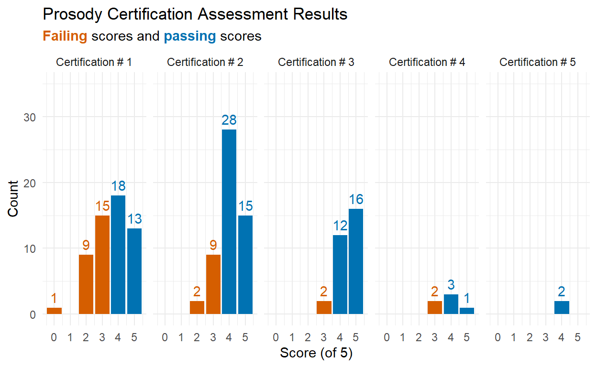
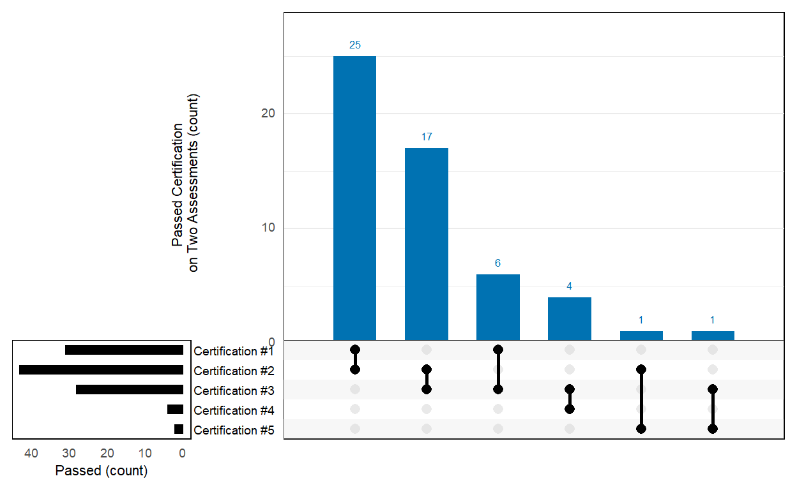
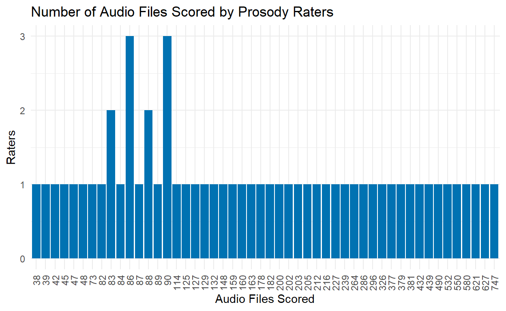

Oral reading fluency (ORF), generally defined as reading quickly, accurately, and with prosody, is an essential part of reading proficiency. Prosody, reading with appropriate expression and phrasing, is one way to demonstrate that a reader understands the meaning of the text.
The purpose of this study is to collect prosody ratings of audio recordings of students’ ORF. These human-rated prosody scores will serve as the basis for training an algorithm that can be used to automatically generate prosody scores from students’ oral reading.
Audio recordings of students in Grades 2 through 4 reading brief ORF passages were collected as part of an IES funded project called Computerized Oral Reading Evaluation, or CORE. CORE combines automatic speech recognition (ASR) to score ORF accuracy and rate, with a latent variable psychometric model to scale, equate, and link scores across Grades 2 through 4. The primary goal of CORE is to develop an ORF assessment system with the potential to reduce: (a) human ORF administration errors, by standardizing administration setting, delivery, and scoring; (b) the time cost of ORF administration, by allowing small-group or whole-classroom testing; (c) the resource cost to train staff to administer and score the ORF assessment; and (d) the standard error of ORF measurement.
The work conducted in the current project extends this line of research by incorporating prosody into the measurement model.
The Consequential Validity Study from the original CORE project conducted in 2017-18 and 2018-19 resulted in the accumulation of 90,720 audio files. Of these, 8,713 were excluded from the current study because they were recordings of students reading the criterion easyCBM ORF passages from the original study while the remaining 82,007 (90.4%) represented recordings of students reading brief (approximately 50-85 word) passages developed specifically for the CORE project. From the 82,007 eligible audio recordings, only those that were at least ten seconds long were selected (to screen for empty or incomplete files) for a final corpus of 78,712 audio files.
CORE passages were written by a former teacher, who also co-wrote the original easyCBM ORF and reading comprehension passages. Each CORE passage is an original work of fiction, and within 5 words of a targeted length: long = 85 words or medium = 50 words. Each passage has a beginning, middle, and end, follows either a “problem/resolution” or “sequence of events” format, and contains minimal use of dialogue and symbols. Exclusion rules for what could not appear in passages included: religious themes; trademark names, places, products; cultural/ethnic depictions; age-inappropriate themes (e.g., violence, guns, tobacco, drugs). All final CORE passages were reviewed by two experts in assessment for screening and progress monitoring for errors (e.g., format and grammatical), and bias (e.g., gender, cultural, religious, geographical). Final passages included 150 total passages, 50 at each of Grades 2-4, with 20 long passages (80-90 words), and 30 medium passages (45-55 words) for each grade.
For the current study, a two-step process was used to select 200 audio files for 10 CORE ORF passages at each of Grades 2 through 4.
First, for each grade and passage length the 5 CORE passages with the greatest number of audio file records were selected to create as large an item bank as possible. This process resulted in the selection of 10 CORE passages (5 long and 5 medium) for each of Grades 2 – 4, 30 passages in all.
Second, stratified random sampling was applied to select 200 audio recordings of each CORE passage, oversampling for English learners (ELs) and students with disabilities (SWDs), two student groups for which the ASR may be less accurate. The stratified random sampling plan led to the following quantities of sampled audio files: 5 students (2.5%) dually classified as EL and SWD, 65 students (32.5%) classified as EL only, 65 students (32.5%) classified as SWD only, and 65 students (32.5%) classified as neither EL nor SWD. A cascading logic was implemented, such that when fewer than 5 recordings included students dually classified as EL and SWD, the remainder of recordings was sampled from students classified as EL only. If there were insufficient audio recordings from EL only students, the remainder was sampled from students classified as SWD only. The remainder of audio recordings was sampled from students classified as neither EL nor SWD, of which there were ample recordings.
The design of the project stipulated that each of the 200 audio files per CORE passage (10 passages * 3 grade levels * 200 recordings = 6,000 audio files) was to be rated for prosody by two different raters for a total of 12,000 prosody ratings (6,000 * 2 ratings = 12,000 total prosody ratings). The 6,000 audio files were grouped into 120 sets of 50 for distribution to human raters. The 200 audio files per CORE passage were split into four sets, such that each set of 50 contained audio files of students reading the same passage. This structure was used to allow raters to get familiar with a passage and thus provide more reliable ratings. The sets were manually distributed to raters required, descending by grade and passage such that all four sets of the first Grade 4 passage were sent to the first eight raters (as each set was rated twice), and continuing through the last Grade 2 passage.
Of the 6,000 selected audio files 836 (14%) had to be replaced because they had no audio available to score; either there was no audio (e.g., the student was muted or advanced without reading), or the audio did not allow the rater to confidently give a prosody score (e.g., poor audio quality, too much background noise, a very quiet reader). All audio files were replaced with a reading from the same CORE passage. For n audio files that needed to be replaced for a CORE passage, n \(\times\) 1.175 (17.5% of n) were sampled to account for potential audio recording with no available audio in the replacement set. An effort was made to replace audio files read by a student with the same EL/SWD classification. That is, the same cascading logic as previously described was applied, such that when the number of recordings for students dually classified as EL and SWD was less than required in our sampling plan, the remainder was sampled from students classified as EL only. If there were insufficient audio recordings from EL only students, the remainder was sampled from students classified as SWD only. Insufficient recordings led to the remainder of audio recordings being sampled from students classified as neither EL nor SWD, of which there were ample recordings. An additional 998 audio files were distributed to the human raters as replacements.
After the 998 audio file replacements were scored, there remained five CORE passages that had less than 200 audio files with two different prosody ratings: three CORE passages had 199 audio files, and two had 197 audio files. For n (1 or 3) audio files that needed to be replaced for a CORE passage, n \(\times\) 7 were sampled to account for potential audio recording with no available audio in the replacement set. These audio files were randomly sampled (without stratifying for ELs and SWDs) from those remaining for the respective CORE passages.
After all usable audio files were selected the full sample included 6,096 audio files each rated twice. Of these from 1,342 students (4,068 in Grade 2, 4,070 in Grade 3, 4,054 in Grade 4). The number of audio files per student in the final sample ranged from 2 to 44.
The results of the stratification yielded a sample of 6,096 audio files that was 2% (n = 256) EL and SWD, 23% (n = 2848) EL only, 29% (n = 3532) SWD only, and 46% (n = 5556) neither EL or SWD.
| Sample Demographic Characteristics | ||
|---|---|---|
| Characteristic | By Student | By Audiofile |
| N = 1,3421 | N = 6,0961 | |
| Grade | ||
| 2 | 464 (35%) | 2,034 (33%) |
| 3 | 430 (32%) | 2,035 (33%) |
| 4 | 448 (33%) | 2,027 (33%) |
| Gender | ||
| Female | 595 (49%) | 2,488 (46%) |
| Male | 609 (51%) | 2,919 (54%) |
| (Missing) | 138 | 689 |
| Ethnicity | ||
| Hispanic/Latino | 315 (26%) | 1,750 (32%) |
| Not Hispanic/Latino | 889 (74%) | 3,657 (68%) |
| (Missing) | 138 | 689 |
| Race | ||
| American Indian/Native Alaskan | 49 (4.1%) | 275 (5.1%) |
| Asian | 9 (0.7%) | 64 (1.2%) |
| Black/African American | 6 (0.5%) | 27 (0.5%) |
| Hispanic | 46 (3.8%) | 172 (3.2%) |
| Multi-Racial | 107 (8.9%) | 470 (8.7%) |
| Native Hawaiian/Other Pacific Islander | 4 (0.3%) | 20 (0.4%) |
| White | 983 (82%) | 4,379 (81%) |
| (Missing) | 138 | 689 |
| Students with Disabilities (SWD) | 229 (17%) | 1,894 (31%) |
| English Language Learners (EL) | 188 (14%) | 1,552 (25%) |
| Stratification Groups | ||
| EL & SWD | 23 (1.7%) | 128 (2.1%) |
| EL only | 165 (12%) | 1,424 (23%) |
| Not EL or SWD | 948 (71%) | 2,778 (46%) |
| SWD only | 206 (15%) | 1,766 (29%) |
|
1
n (%)
|
||
The research team comprised four faculty with expertise in the assessment of students’ reading fluency (specializations included: two doctorates in School Psychology, one doctorate in Educational Leadership with a specialization in Learning Assessment/Systems Performance, and one doctorate in Educational Psychology), and one graduate research assistant with experience in literacy. The research team met weekly from August through November 2020, to refine a prosody scoring rubric, score audio files to be used as training and demonstration exemplars, and develop two online sessions to train prosody raters. These sessions were delivered live as well as recorded for asynchronous delivery for raters who were unable to attend in person.
The research team began with the prosody scoring rubric developed by the National Assessment of Educational Progress (NAEP; 1), a four-point scale (below) that focuses on phrasing, adherence to the author’s syntax, and expressiveness to assess prosody at Grade 4.
Figure 1: From Daane, Campbell, Grigg, Goodman, & Oranje (2005)
Although NAEP only applied the scoring rubric to Grade 4, our research team made the decision to use the rubric across Grades 2 through 4, independent of grade and based on the absolute prosody criteria specified for each of the four prosody levels.
To help draw clear differences between the four prosody levels across grades, parts of the Multi-Dimensional Fluency Scoring Guide (MFSG; 2) were incorporated into the original NAEP rubric.
Figure 2: From Rasinski, Rikli, & Johnston (2009)
The MFSG focuses on assessing aspects of expression, phrasing, smoothness, pacing, and accuracy. The research team expanded and refined the NAEP prosody rubric with select parts of the MFSG to add more specific language and examples.
A systematic process for adapting the NAEP rubric was conducted in August and September, 2020. First, 30 audio recordings were dispersed among the research team and scored individually by the four faculty. These scores and commentary were documented, analyzed, and discussed during the following week’s meetings. A summary of the team’s individual scores was presented, highlighting areas of agreement and disagreement: 9 audio files (30%) received the same score across all four raters; 13 (43%) received the same score across three raters with the fourth rating different by one prosody level; 4 (13%) were split down the middle, with two sets of identical scores that differed by one prosody level; and 4 (13%) received three different prosody scores, two of which were scored the same and two of which differed by two prosody levels. Based on inconsistent variation within the team, it was decided that more in-depth explanation was needed for each of the score levels.
To achieve this goal, the team listened to recordings together during online meetings and iteratively specified deeper distinctions between adjacent scores using the MFSG factors of pace, phrasing, and expression and volume. The 30 audio recordings were again scored individually by the four faculty: 12 (40%) audio files (30%) received the same score across all four raters; 12 (40%) received the same score across three raters, with the fourth rating different by one prosody level; and 6 (20%) were split down the middle, with two sets of identical scores that differed by one prosody level.
The team further refined the adapted rubric to clarify rating criteria and arrive at more unequivocal prosody scores. That is, the first version of the adapted rubric did not address whether the overall storyline was “represented” by the reader. After working through various examples, the research team added the following distinctions for each proficiency level (italic text represents additions from the MFSG, and regular text represents additions made by the research team).

After finalizing the refined rubric, the research team came to unanimous agreement on the 30 audio files. Then, additional audio files were sought with the goal of having 15 exemplar audio files for each of the four prosody levels. ORF data from the CORE project were used to find (de-identified) students whose fall easyCBM ORF scores clustered around a specified percentile; for example, students who scored at or below the 20th percentile as potential candidates for prosody scores of Levels 1 or 2, and students who scored above the 90th percentile as potential candidates for a prosody score of Level 4. Using this process, the team identified an additional 31 audio files, each of which were independently scored by two of the five research team personnel. Of these, 21 (68%) received the same score across the two raters. The remaining 10 audio files were scored by a third member of the research team, and discussed by the full research team until unanimous score agreement was achieved. Additional exemplar audio files were still needed for Levels 2 and 4, so 16 additional files were identified and underwent the same process just described.
In total, 81 passages were identified and scored by the research team as exemplars for trainings and demonstrations: 20 at Level 4, 23 at Level 3, 15 at Level 2, and 23 at Level 1. Of these, 24 were used for Training, 25 were used for Certification (both described below), and the remaining 32 were retained in case of future need.
Human prosody raters were recruited and required to complete two Training Sessions, and meet Prosody Certification criterion.
Educators (teachers and specialized professionals) were targeted as potential prosody raters. Potential prosody raters were recruited in October – November 2020 from two sources: teacher participants from the original CORE project, and through an announcement placed on the easyCBM - Lite and Deluxe sites for three weeks (10/19/2020 – 11/6/2020). These two easyCBM sites have over 79,000 registered users.
Approximately 300 people responded to the announcement posted on the easyCBM sites. These respondents were then sent an email introducing them to the project, the task required of them, what they could expect (payment terms, remote work, and work commitment), training requirements, the prosody certification process, and next steps (a Qualtrics Registration form requiring demographic information, teaching experience, and a W9). The PI (J. F. T. Nese) corresponded with all potential prosody raters throughout the process.
Of the 300 respondents, 119 completed the Registration form, and 78 completed the required trainings. (No information is available as to why some chose not to complete the Registration or the trainings.)
Prior to starting work, each prosody rater was required to complete the Training and demonstrate scoring proficiency by obtaining 80% or higher agreement with the research team’s pre-determined rating on two different sets of five audio files. Raters had five opportunities to achieve at least 80% (4/5) on two of the prosody assessments. Raters unable to achieve two passing scores received payment for their participation in training ($45) but were not eligible to continue their participation in this project.
All Prosody Certification Assessments were delivered with Google Forms’ Quiz feature. All participants took the first Prosody Certification after Training #1 and before Training #2. The remaining Prosody Certification assessments were taken at each participant’s pace. Once a participant met the prosody certification criteria by scoring at least 80% on two assessments, they began scoring audio files (and took no more assessments).
Of the 78 people who completed the Trainings, 63 (81%) met prosody certification, 2 (3%) failed to meet certification, and 13 (17%) did not complete the certification process.
| Prosody Certification Assessment Passing Rates | |||||
|---|---|---|---|---|---|
| n | Fail | Fail (%) | Pass | Pass (%) | |
| Certification #1 | 78 | 37 | 47% | 41 | 53% |
| Certification #2 | 73 | 20 | 27% | 53 | 73% |
| Certification #3 | 41 | 6 | 15% | 35 | 85% |
| Certification #4 | 10 | 5 | 50% | 5 | 50% |
| Certification #5 | 4 | 1 | 25% | 3 | 75% |
Of the 78 people who took Certification #1, 53% passed by scoring 4 or 5; 73% of the 73 people who took Certification #2 passed; 85% of the 41 people who took Certification #3 passed; 50% of the 10 people who took Certification #4 passed; and 75% of the 4 people who took Certification #5 passed.

A two-session training for prosody raters was developed for in-person, online delivery across two meetings in November 2020. Each Training Session was delivered twice: on Friday and the subsequent Monday afternoon (after the school day had concluded), and participants could attend either the Friday or the Monday training. There was one week between Training Session #1 and Session #2. For Training Session #1, Day 1 was held on 11/13/2020 and Day 2 was held on 11/16/2020. For Training Session #2, Day 1 was held on 11/20/2020 and Day 2 was held on 11/23/2020.
Three members of the team were present to deliver content and answer questions using Powerpoint slides presented on the Zoom platform for web-based, live interaction. All trainings were recorded via Zoom for asynchronous training for participants who could not attend one or both of the live trainings. In total, 78 people completed the trainings.
| Training Sessions Attendance | |||
|---|---|---|---|
| Training Session | Day 1 | Day 2 | Asynchronous |
| Session #1 | 35 | 35 | 8 |
| Session #2 | 34 | 35 | 9 |
The research team created a website for participants to access training resources. The website included: the seven-step process for scoring audio files; the prosody rubric as a resource to print or keep open when rating; training materials, including the presentation slides, and a recording of each Training Session; the 24 exemplar audio files from Training Session #1; the link to the scoring site; and an About page with information about the study.
During Training Session #1 (2 hours), study logistics and key concepts were explained to potential raters. Training included: information about the project context; a comprehensive review of prosody; the task of rating audio recordings for prosody; an explanation of the rubric and how to rate recordings; how to earn certification as prosody rater; the expectations and payment structure; a set of 12 exemplar audio files (about one recording per prosody level for each of Grades 2 – 4); and a practice exercise, consisting of 12 exemplar audio files (three at each of the four prosody levels presented randomly) followed by a discussion of each and the qualities that made it a specific prosody level.
Participants were also introduced to prosody scoring in partial increments of 0.5 to facilitate prosody ratings in cases of nuanced uncertainty. For example, if a rater’s prosody rating was undecided between Level 2 and 3, they could score it as a 2.5. For the purposes of the study, all half scores (i.e., 1.5, 2.5, and 3.5) were rounded down because they did not meet the threshold for a higher score.
The Training Session #1 practice exercise involved three rounds of listening to each audio file. The purpose of the first listen was to pay attention to the passage’s general meaning so that raters would have a general sense of what the passage was about and the degree to which the student’s reading conveyed the meaning. The purpose of the second listen was to train raters to pay attention to reading style (i.e., word-by-word, awkward word groups, conversational) and to notice whether the author’s syntax was preserved. The third listen was used to train raters to pay attention to expressiveness. This step-by-step process was designed to train raters to attend to all aspects of the rubric, and not to focus exclusively on any single aspect. The team developed a seven-step guide for listening to and scoring audio recordings.

After listening to example recordings to clarify the scale, participants were able to practice on their own. Recordings were played, and participants were asked to first think about how they would rate the recording without sharing their scores, and then they were prompted to type their prosody score for the recorded reading into the Zoom platform’s chat box feature. Participants’ reasoning for scores was discussed as a large group with research team members facilitating the discussion and using the rubric to emphasize points made.
After Training Session #1, participants were given the first Prosody Certification assessment, which consisted of five audio files to be scored individually, on their own time, before Training Session #2.
Of the 78 people who took the Prosody Certification Assessment #1, 41 (53%) passed and 37 (47%) did not. Note that Certification #1 was taken after Training Session #1, before the entire Training process was complete.

One week later, participants again met with the research team for Training Session #2 (1.5 hours). Training Session #2 consisted primarily of a review of the five audio files from Prosody Certification #1. Participants were asked to listen to an audio file, with the prosody score provided by the training facilitator, and to identify key features that justified the score. After listening to an audio file, they were asked to share in the Zoom platform’s chat box prosody rubric features (shown on the screen) of the reading that corresponded to the score. The training facilitator read aloud and discussed the relevant and important prosody score features, using the rubric to confirm scores with participants. Participants were encouraged to ask questions if they did not understand or disagreed with the prosody score. Each audio file was played multiple times (three to six) to solidify the score and rationale for the attendees. This process was repeated for each of the five audio files.
Participants were then given an introduction to and demonstration of the software that they would use to score the audio files for prosody if they met certification. They were also introduced to the training website.
The final prosody sample included 56 prosody raters, 7 from each of FL and IL, 4 from each of OR, 3 from each of IN, KS, NV and OH, 2 from each of GA, ID, KY, MI, NC and VA, and 1 from each of AL, AZ, CA, CO, LA, MT, NM, NY, PA, SC, TN, TX, UT and WA. Nearly all (54) raters were female, 1 was non-binary, and 1 chose not to response.
Among the prosody raters, 32 (57%) earned a Masters in education, 18 (32%) earned a Bachelor, 2 (4%) earned a Masters in another field, 2 (4%) earned an Associate, and 2 (4%) earned a Doctorate.

The professional roles of the raters were as follows:
16 (29%) were special education teachers
13 (23%) were general education teachers
10 (18%) were reading/literacy specialists
9 (16%) reported as “other”
3 (5%) reported as “school psychologist | social worker | counselor | behavior specialist | etc.”
2 (4%) reported as “administrator | principal | district support”
2 (4%) were retired, and reported their role as special educators before retirement
1 (2%) an “other content area specialist” (i.e., ESOL)
Nearly all of the prosody raters (n = 47, 84%) worked at the elementary school level, 4 (7%) worked at the middle school level, 2 (4%) worked at the high school level, 1 (2%) worked at the elementary and middle levels, 1 (2%) worked at all three levels, and 1 (2%) worked with adults.
The average years experience as an educator was 14 years (SD = 9.9).

All 56 prosody raters met the prosody certification criteria by scoring at least 80% on two Prosody Certification Assessments. Note that Certification #1 was taken after Training Session #1, before the Training was complete.
| Prosody Certification Assessment Passing Rates | |||||
|---|---|---|---|---|---|
| n | Fail | Fail (%) | Pass | Pass (%) | |
| Certification #1 | 56 | 25 | 45% | 31 | 55% |
| Certification #2 | 54 | 11 | 20% | 43 | 80% |
| Certification #3 | 30 | 2 | 7% | 28 | 93% |
| Certification #4 | 6 | 2 | 33% | 4 | 67% |
| Certification #5 | 2 | 0 | 0% | 2 | 100% |
Of the 56 people who took Certification #1, 55% passed by scoring 4 or 5; 80% of the 54 people who took Certification #2 passed; 93% of the 30 people who took Certification #3 passed; 67% of the 6 people who took Certification #4 passed; and 100% of the 2 people who took Certification #5 passed.

The plot below shows which two Prosody Certification Assessments the raters met prosody certification. Twenty-five raters (45%) passed Certification #1 and Certification #2, 17 (30%) passed Certification #2 and Certification #3, 6 (11%) passed Certification #1 and Certification #3, 4 (7%) passed Certification #3 and Certification #4, 1 (2%) passed Certification #2 and Certification #5, and 1 (2%) passed Certification #3 and Certification #5.

The 56certified prosody raters created a profile on a project-designed Moodle site. Raters each created their own log-in information for the system. The system allowed raters to skip audio files, go back and change scores, and complete the rating in multiple sessions, stopping and re-starting as needed. In addition to the seven-point prosody scale (1, 1.5, 2, 2.5, 3, 3.5, 4), raters were also given an option to note “No audio available to score” in case there was no audio (e.g., the student was muted or advanced without reading) or the audio did not allow the rater to confidently give a score (e.g., poor audio quality, too much background noise, a very quiet reader).
The prosody raters were instructed to first complete a Prosody Review containing four exemplar files, one at each prosody level (i.e, 1, 2, 3, 4), prior to rating their first set of audio files. The expectation was set in training that raters must complete a minimum of 50 audio files; there was no maximum. Upon completion of the first set of recordings, raters emailed PI Nese to receive another set of recordings to rate.
In this manner, all 6,096 audio recordings were rated by two different prosody raters from November 28, 2020 through February 8, 2021, for a total of 12,192 human prosody scores.
The median number of audio files scored by prosody raters was 160, with a range from 38 to 747 (Mean = 218, SD = 177).

This is a place to recognize people and institutions. It may also be a good place to acknowledge and cite software that makes your work possible.
We strongly encourage you to include an author contributions statement briefly describing what each author did.